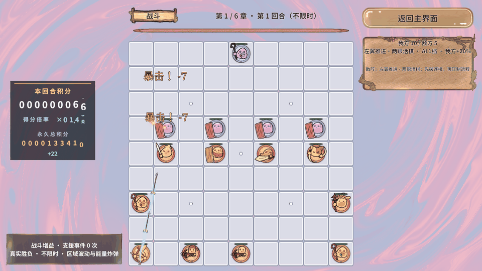
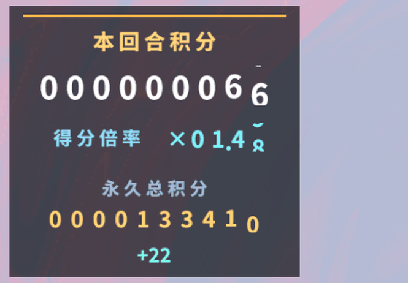
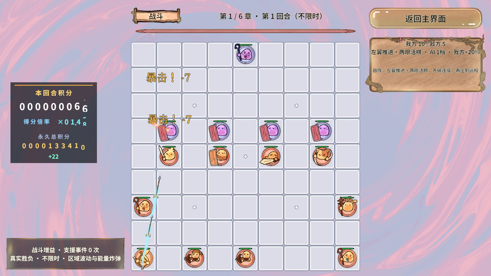
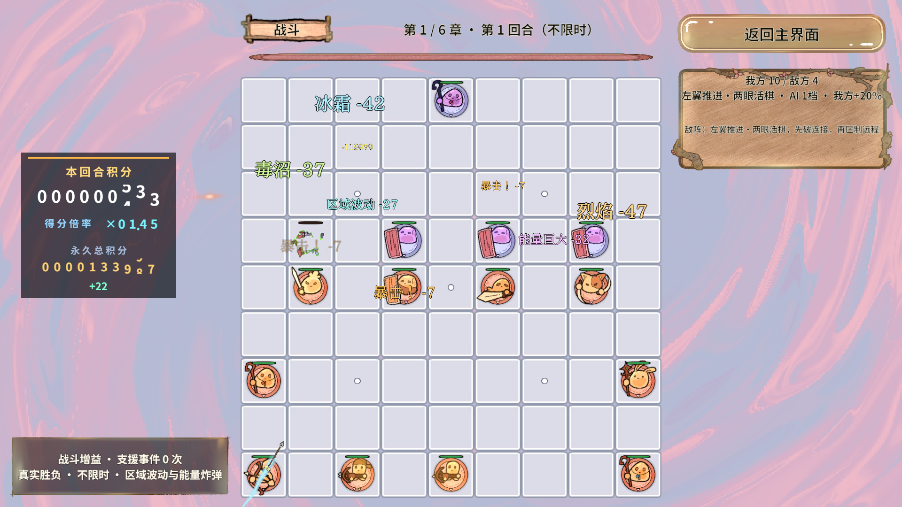
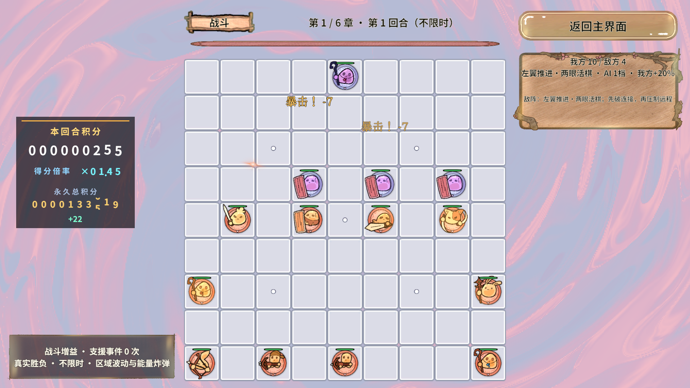
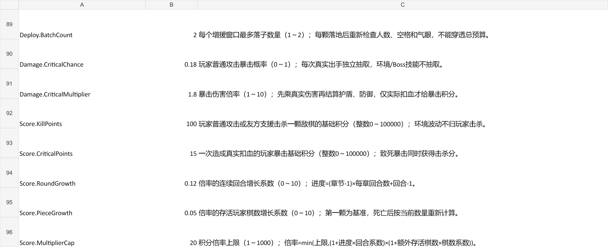
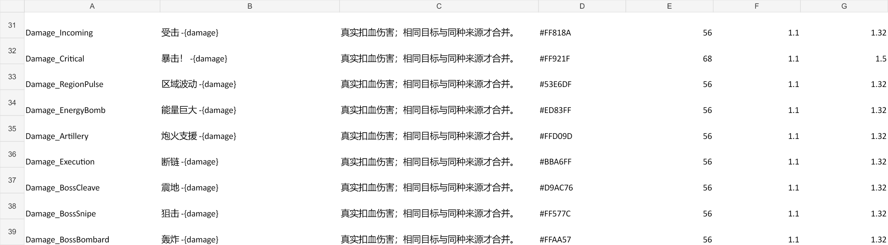

业务与真实AB验证通过
第10回合Boss
每章十轮布局均不同
构建发布成功
积分/敌阵规则1,089条断言、积分Play 222条、密集反馈2,897条、最终冷启动往返3,579条通过；原有业务675条和战术747条通过。数字包含逐帧重复检查，不等于独立测试案例数。
配置表、导出数据、共享Shader/材质/预制体、中文代码注释与验证入口同步交付。已有箭矢拖尾、魔法球和近战挥击继续使用并通过反馈回归。
橙色暴击、技能分色与飞星滚筒


普通命中保持黄色；真实暴击显示橙色“暴击！”。区域波动青绿、能量巨大淡紫；Boss技能按毒、冰、火、雷、圣光等特性读取独立Excel样式。
每条伤害用一条DOTween驱动弹出、衰减振动、上浮、淡出。同目标同来源才合并，避免普通伤害吞掉暴击或技能颜色。
积分飞星为程序化单Pass Shader，无额外纹理或独立材质实例。RevPool最多保留12个活动/预约飞星，超预算只少播表现，分数仍完整到账。



Excel配置入口
战斗数值参数.xlsx负责规则；战斗弹幕配置.xlsx负责文案、颜色、字号、时长与弹出倍率。修改后用项目 excel.export 导表，重建目标平台AB；正式启动会校验范围与缺行，不能只改生成的txt。
| 配置项 | 当前值 | 作用 |
|---|---|---|
| Round.NormalPerChapter | 9 | 9普通回合 + 1 Boss = 10回合 |
| Enemy.CountBase / CountMax / CountRoundsPerExtra | 9 / 21 / 5 | 普通敌棋从9起，跨章每5轮增加1，最多21；Boss本体额外加入。后续回合保留玩家残局，空间不足必须安全拒绝。 |
| Deploy.StartSeconds / IntervalMinSeconds | 1.5 / 1 | 首次增援时刻与后续最短冷却，单位秒 |
| Deploy.IntervalBaseSeconds / IntervalPerLevelSeconds / BatchCount | 2.25 / 0.25 / 2 | AI 1～4档目标间隔2 / 1.75 / 1.5 / 1.25秒；每窗口最多2子，每子重查预算和空位 |
| Damage.CriticalChance / CriticalMultiplier | 0.18 / 1.8 | 玩家普通攻击18%暴击、1.8倍伤害；只按实际扣血计暴击积分 |
| Score.KillPoints / CriticalPoints | 100 / 15 | 基础击杀分与暴击分；致死暴击两者相加后乘倍率 |
| Score.RoundGrowth / PieceGrowth / MultiplierCap | 0.12 / 0.05 / 20 | 连续章节进度、存活玩家棋数增长与倍率上限 |
| Damage_Critical / Damage_RegionPulse / Damage_EnergyBomb / Damage_Boss* | 24行新增样式 | HEX颜色、文字、字号、动画时长和弹出倍率，Boss共18种样式 |
倍率 = min(20, (1 + 连续进度 × 0.12) × (1 + max(0, 存活我方棋数 − 1) × 0.05))。连续进度=(章节−1)×10+回合−1；死亡会降低棋数部分，重开第一章不会继承上次挑战的倍率。
每轮积分在新回合成功创建后清零；永久总积分跨回合、失败重开、返回大厅及重启保留。击杀/暴击由BattleService统一入账，动画不会二次加分。中立区域波动击杀不计玩家分，友方能量炸弹/炮火/断链击杀计分。
永久总量采用64位饱和相加，每2秒合并保存；结算、离场、切后台和退出立即刷盘。突然断电可能损失最后一个保存周期；已用独立测试键验证64位存档重建，测试不改玩家生产键。


敌阵与更紧凑的节奏
阵型按连续回合切换左翼、上方、右翼与偏移位置，并轮换兵种。近战偏前排，远程偏后排，守眼骨架与机动棋分开；每章十种完整布局不重复。首轮预留底部两行，保证玩家有布阵空间；后续保留玩家残局与已有眼位。
补子仍由敌方FSM按模拟时钟驱动，按配置窗口最多两颗；每颗落地后重新验证存活数量、预算、空位、完整身体和气眼。间隔是模拟时钟目标，实际执行对齐固定模拟步，不宣称精确到毫秒。
既有后排追击、封气、玩家远程自动整队与区域动画保留；本次旧回归覆盖两组固定种子真实闯过10轮及失败重开，未修改胜负条件来制造通过。
CPU / GPU / 内存：已测结果与边界
| 指标 | 前 → 最终 | 口径 |
|---|---|---|
| 10棋初始阵型规划 | 1.447 → 0.102 ms | 同名单/空玩家棋盘，1次预热+5次采样中位数；安全首选构图通过后提前结束搜索 |
| AI4战术补子选点 | 1.334 → 0.914 ms/次 | 固定双方各5棋，复用深快照，先剔除不合法身体；每样本10次查询 |
| 积分滚筒裁剪 | 57 → 36批次 | 同密集夹具，23个逐列裁剪窗口合为3个整行窗口；优化前为本轮中间测量，最终原始指标另附 |
| 最终编辑器渲染 | 帧间隔中位数10.394 ms；P95 14.190 ms；GPU 1.291 ms | 30帧预热+180帧，不含截图；不是独立Player或手机FPS |
| Unity总已分配内存 | 884.73 / 885.38 / 885.53 MiB | 采样前/末/回收后，含编辑器与保留池；不能据此判定GC分配或泄漏 |
| 活动反馈峰值 | 35弹道 / 20文字 / 12飞星 | 压力停止后活动反馈归零；换回合、退战斗均清理 |
CPU采样受桌面负载影响，中间复测曾得到0.246 / 1.540 ms；最终为0.102 / 0.914 ms，不把单次降幅当作跨设备保证。渲染批次下降可归因于裁剪窗口合并，但最终帧间隔比先前样本6.745 ms更长，不能据此宣称整帧提速。
内存/CPU层面已限制队列与池容量、缓存颜色解析、将待播伤害改为值快照、每条飘字只用1条Tween、按10Hz刷新HUD并合并连续得分动画。未用GPU实例化开关代替实测，也未破坏透明排序。
当前Mono分配计数探针无效，不能声称零GC。尚未进行低端Android实机、10分钟热稳定/降频、独立Player与完整GC.Alloc剖析；Android本轮完成的是Shader门禁及资源包构建。CPU基线 / 最终CPU / 最终渲染原始记录
验收与修复证据
| 验证 | 结果 | 证据 |
|---|---|---|
| 积分 / 10回合 / 60敌阵 / 补子节奏 | 1,089条通过 | 完整调用 |
| 暴击真实扣血、64位永久存档隔离、可见字形、飞星滚筒、回收 | 222条通过 | Play调用 |
| 120次同目标合并、100目标控频、五职业齐射及35上限 | 2,897条通过 | 反馈调用 |
| 正式StartScene真实AB冷启动 + 三次场景往返 | 3,579条通过；字体/纹理/81格/六手牌/过场检查 | 原始记录 |
| 旧规则 / 战术 / 两组10轮真实通关 | 675 + 747条通过 | 结果 / 原始流水线 |
| PC / Android真实资源 | 各29包；302映射、6图集覆盖186图片；重复/循环/漏标/Android Shader错误均0 | PC / Android |
| 连续重复图集配置 | 2次均通过全部门禁 | 幂等检查 |
本次发现的问题与修复，保留失败记录
最初滚筒Text受CJK字体行高及Truncate限制，生成0字形顶点；改为允许完整生成字形，再由RectMask裁剪，并新增可见字形断言。随后将逐列裁剪合并为整行，保持真实数字可见。
重复配置曾使UIMenus图集包标记丢失，唯一归属门禁正确阻断构建。项目生成器改为计算最终包标记后仅写差异，图集成员相同不重建源文件，Importer保存后再取新引用写包名；两次配置与两平台构建通过。早前Windows meta写入失败的外部占用根因未确证，不将推测写成事实。失败门禁记录。
原有规则回归动作已成功，但其所在流水线后续配置前桥接短暂离线，故该原始JSON顶层仍为false；这里仅报告其已完成的回归动作通过。后续配置、构建、冷启动另有完整成功证据。早期失败画面被同名连拍覆盖，未补造截图。
环境：Windows，Unity 2022.3.15f1c1，i7-12700H / Intel Iris Xe，桌面GameView 1920×1080。最终测试使用真实PC AB；编辑器退出Play，Console无错误。报告离线检查链接与媒体，未将浏览器页面渲染检查计为通过。
Revolution框架可行性结论
验证了真实扣血 → BattleService计分 → RevEvent值快照 → RevPool飞星 / DOTween滚筒 → RevTimer合并持久化 → RevScope退出清理的业务链。规则、表现与存档各有归属，用户可调数值统一Excel，项目没有新增并行战斗时钟或第二套对象池。
资源继续经RevResManager与既有AB门禁；本次只修改项目侧生成器、业务与自动生成资源映射，未修改Revolution框架实现快照。框架能承载这组真实业务需求；低端设备性能结论仍待独立Player/实机证据。
目录：Services/Battle/Scoring规则、Services/Progression存档、UI/Panels/Battle滚筒与面板、View/Combat/Effects飞星、GameShader/Combat共享Shader、Editor/RevGame装配与验收。规范已同步到战斗性能优化规则。